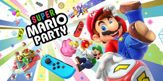
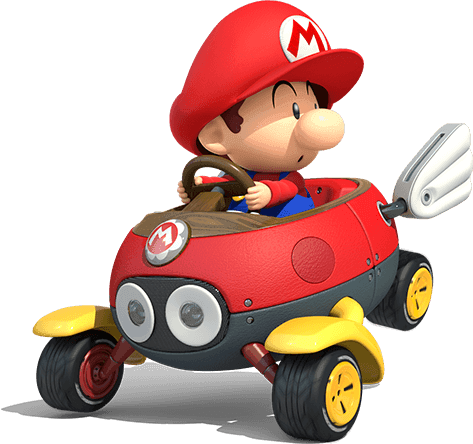
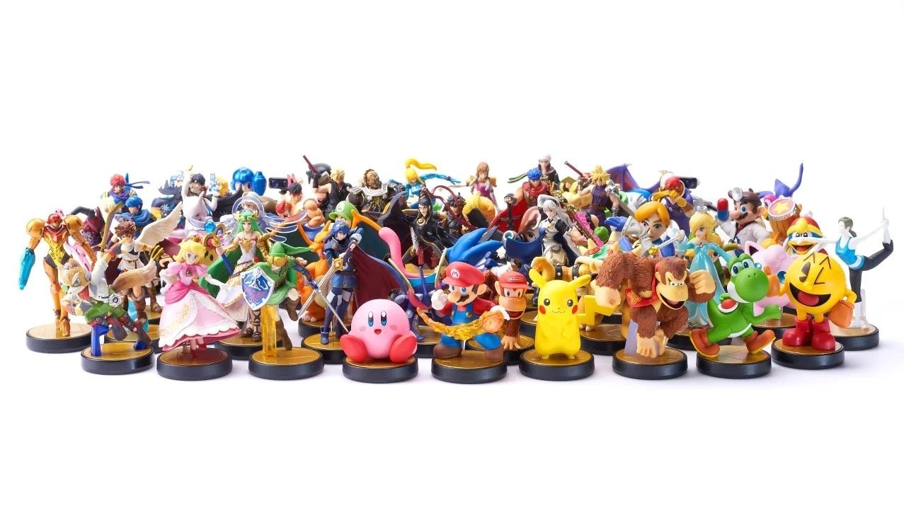

Super Mario Party
El juego de mesa original sube el listón con elementos de estrategia más profunda, como dados específicos para cada personaje. También cuenta con nuevas formas de jugar, incluidos minijuegos manejados con los Joy-Con y nuevos modos para disfrutar con la familia y amigos.
El juego de mesa se mantiene fiel a la estructura de juego básica con cuatro jugadores que se mueven por turnos sobre el tablero en busca de estrellas. También es posible conectar dos consolas Nintendo Switch y disfrutar de este estilo de juego y del modo Sala de recreo de Toad. Y por primera vez en la historia de la serie, podrás poner a prueba tus habilidades contra otros fans de Mario Party en un nuevo minijuego online.
Da clic en la imagen para ver el trailer de lanzamiento del juego.
Mario Kart 8 Deluxe
Es un videojuego de carreras desarrollado y publicado por Nintendo para la consola Nintendo Switch. Es la undécima entrega de la serie Mario Kart, novena en consolas de Nintendo, lanzado mundialmente el 28 de abril de 2017. Cuenta con todo lo visto previamente en Mario Kart 8 (pistas, personajes, DLCs, vehículos, etc.). Aunque no incluye nuevas pistas de carreras, incluye nuevos personajes y un mejorado modo batalla.
Contiene 48 circuitos, el cuales están inspirados en Animal Crossing, Excitebike, The Legend of Zelda y muchos más. Además cuenta con diferentes modos de juego, el cuales estan: Grand Prix, Contrarreloj, Carrera VS, Multijugador en línea y Modo Batalla.

Checa aqui el trailer de lanzamiento de este gran juego.
Super Smash Bros Ultimate
Super Smash Bros. Ultimate, como otros videojuegos de la serie Super Smash Bros., presenta un crossover de luchadores de diferentes franquicias de Nintendo —como las series de videojuegos de Mario y Metroid— así como combatientes icónicos de propiedades de terceros, tales como Sonic the Hedgehog, Pac-Man, Solid Snake y Mega Man. Ultimate incluye a todos los personajes de los títulos anteriores de Super Smash Bros.
Se introdujo el concepto de los "Echo Fighters", personajes que anteriormente se basaban en un luchador y solo cambiaban su apariencia estética y algunos cambios menores en sus estadísticas o conjuntos de movimiento. Estos personajes son tratados como personajes únicos dentro de la lista de luchadores de Ultimate. Por ejemplo, Daisy de la franquicia de Mario es un Echo Fighter individual en Ultimate (anteriormente solo era representada como un cambio en la paleta de colores de Peach). Los nuevos luchadores de esta entrega incluyen los Inklings de Splatoon; Ridley y Samus Oscura de la serie Metroid; los cazadores de vampiros Simon Belmont y Ritcher de Castlevania; Chrom de Fire Emblem; el antagonista de Donkey Kong Country, King K. Rool; Isabelle o también conocida como Canela, de Animal Crossing; Ken, como eco de Ryu; Incineroar; y como personaje adicional a una compra temprana desde el lanzamiento del juego, Planta Piraña, del universo Mario Bros, y la lista continua con el contenido DLC, el cual incluye a los personajes Joker, de Persona (serie); El héroe de Dragon Quest; Banjo-Kazooie, de la saga del mismo nombre, y otros dos no anunciados aún. La lista total hasta la fecha de personajes jugables en Ultimate es 72, de un total de 75, contando los 6 DLCs, el número más alto de personajes jugables de todos los videojuegos de Super Smash Bros.

New Super Marios Bros. U Deluxe
Corre, salta y pega pisotones de campeonato a lo largo de más de 160 niveles en 2D de desplazamiento lateral. ¡New Super Mario Bros. U Deluxe para Nintendo Switch recupera el estilo de los juegos clásicos de Super Mario! Hasta cuatro jugadores* pueden aunar fuerzas para recoger monedas y derrotar a los enemigos de camino al banderín. También pueden competir de manera amistosa para ver quién reúne más monedas. Sea como sea, ¡la diversión está asegurada!
Observa lo divertido que es este videojuego y las horas de entretenimiento que puedes tener.
Super Mario Maker 2
¡Rompe las reglas y crea los niveles de Super Mario con los que siempre has soñado en Super Mario Maker 2, disponible en exclusiva para Nintendo Switch! Utiliza el amplio abanico de nuevas herramientas, funciones y elementos de niveles, dale rienda suelta a tu imaginación y crea niveles únicos que podrás compartir con amigos y jugadores de todo el mundo.
Dale clic en la imagen y observa todo lo que puedes hacer en esta segunda entrega de Mario Maker
Ir arriba